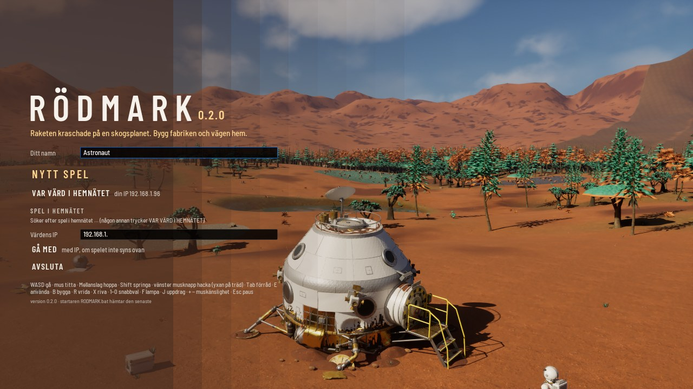
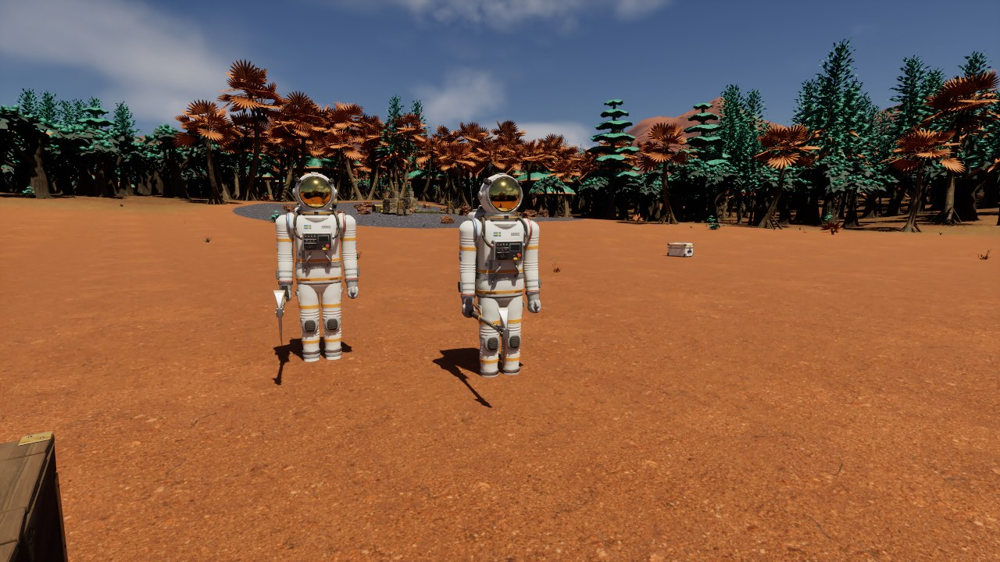
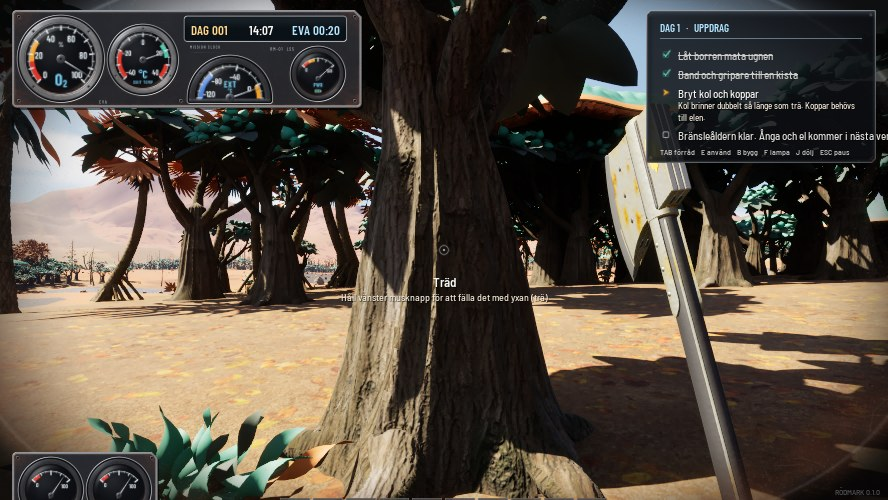
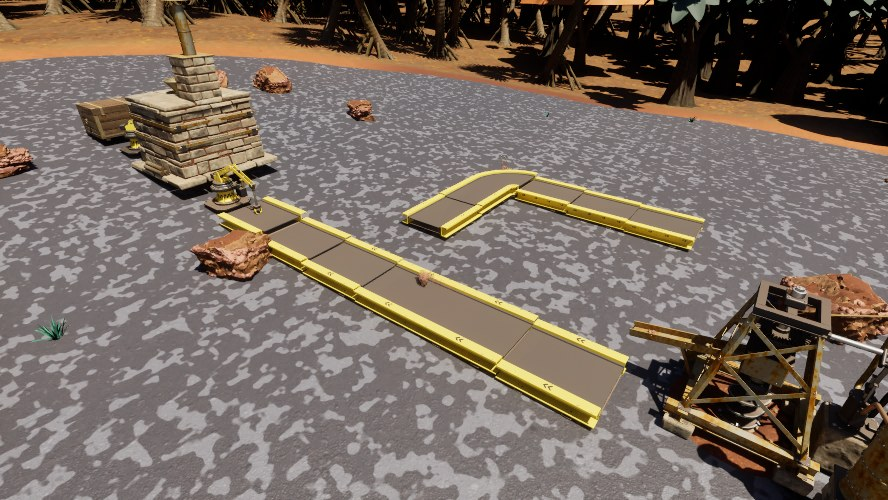
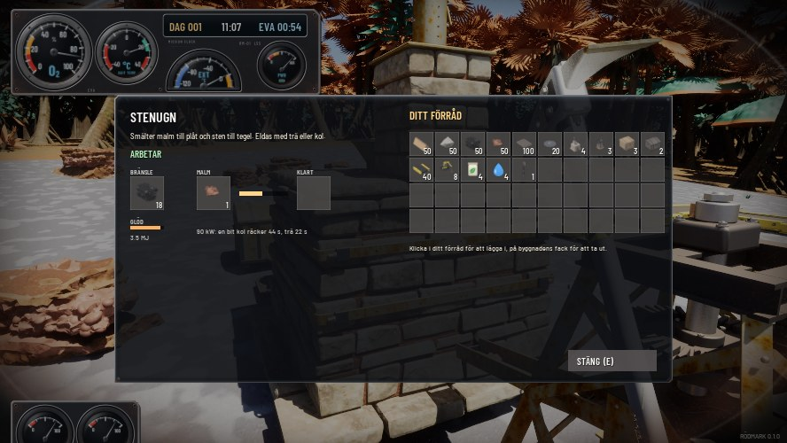
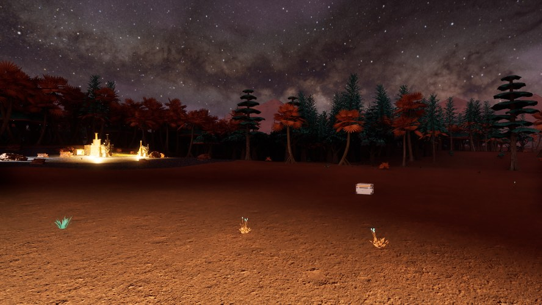

0.2.0 «Första lågan»
Yxa, förråd med 40 fack, handtillverkning, stenugn, brännarborr, kistor, transportband och gripare. Spela själv eller 1–4 i hemnätet.
Raketen har kraschat på en främmande skogsplanet. Fäll träd, bryt malm och bygg en fabrik som arbetar åt dig, ensam eller ihop med vänner, var de än sitter. Luften går inte att andas, så håll koll på syret.
Ladda nerSenaste versionen: … · Windows 10/11 · uppdaterar sig själv
Tryck på den orange knappen. Filen heter RODMARK-…-win64.zip och är ungefär en halv gigabyte.
Högerklicka på zip-filen och välj Extrahera alla…. Lägg mappen där du vill ha spelet, till exempel på skrivbordet.
Öppna mappen Windows och dubbelklicka på Rodmark.exe. Vill du ha spelet på skrivbordet: högerklicka på filen och välj Skicka till → Skrivbord (skapa genväg).
Tryck på Mer information och sedan Kör ändå. Spelet är inte signerat, därför frågar Windows.
Spelet öppnar brandväggen en gång, så att datorer i samma hus hittar varandra. Windows frågar om lov: tryck Ja. Frågar Windows igen: välj Tillåt. Över internet fungerar spelet även om du säger nej.
När du startar spelet kollar det om det finns en nyare version. Finns det en hämtas bara de filer som har ändrats, medan du är i menyn eller spelar, och menyn visar hur långt det har kommit. När den är hämtad trycker du UPPDATERA NU, så startar spelet om med den nya versionen. Annars läggs den in när du avslutar. Du behöver aldrig ladda ner zip-filen igen.
Versionen står stort bredvid namnet i huvudmenyn och nere till höger när du spelar. Ni som spelar ihop ska ha samma version, och det blir det automatiskt när alla har uppdaterat.


1 till 4 spelare, i samma hus eller var som helst. Den ena startar ett spel med NYTT SPEL eller FORTSÄTT och blir värd. Efter några sekunder syns spelet hos de andra under SPELA MED VÄNNER, och de trycker på det. Ingen IP-adress behövs, och ingenting extra att installera. (Spelen hittar varandra genom Epic Online Services, gratis och utan konto.)
Syns det inte? Kolla att ni har samma version. I samma hus finns en reserv: skriv värdens IP-adress (den står i värdens meny vid GÅ MED MED IP) i rutan Värdens IP och tryck GÅ MED MED IP.
Alla har ett eget förråd. Skriv samma namn varje gång, så har du kvar dina saker och står där du slutade nästa gång ni spelar.




Yxa, förråd med 40 fack, handtillverkning, stenugn, brännarborr, kistor, transportband och gripare. Spela själv eller 1–4 i hemnätet.